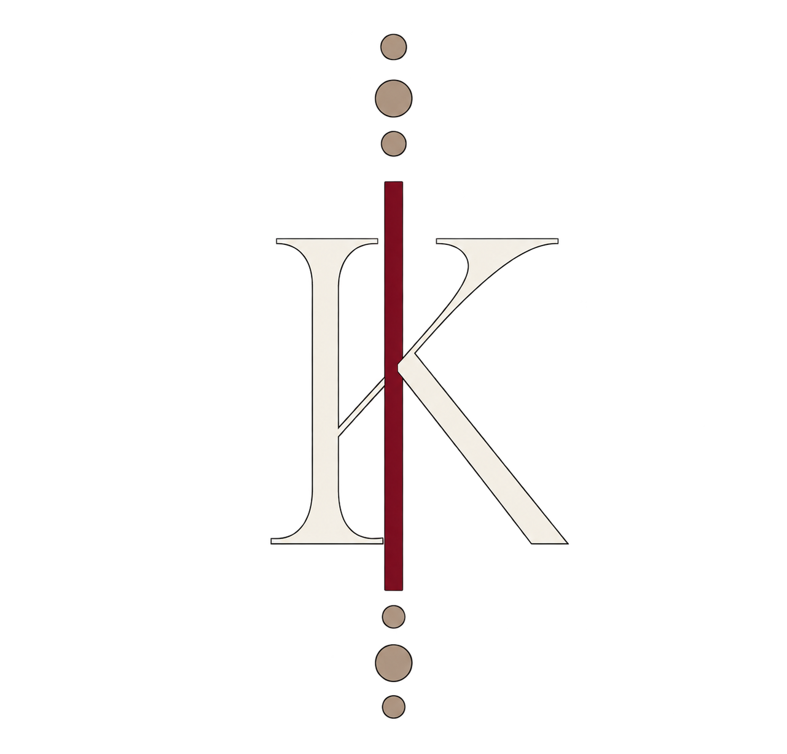

Stealth Puzzle Game
In deze vertical slice van Untitled Goose was één van mijn eerste samenwerkingen met game artists. Ik was de game programmeur leider en werkte samen met een game artist om een vertical slice te maken van de game Untitled Goose. je bent als speler die door een boederij loopt en je moet de boer irriteren door verschillende objecten te verplaatsen en de boer te ontwijken.